🏝️ サンタクルス島 Santa Cruz
ガラパゴス最大の観光拠点・チャールズ・ダーウィン研究所がある島
観光拠点
ダーウィン研究所
ゾウガメ野生観察
爬虫類・両生類
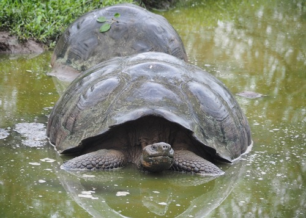
🐢♂ 最大250kg、サドル型も
♀ やや小型・ドーム型
ガラパゴスゾウガメ
Galápagos Giant Tortoise
Chelonoidis niger
特徴
- 世界最大のリクガメ。体重100〜250kg、寿命150年超
- 甲羅の形が島・亜種ごとに異なる（ドーム型/サドル型）
- ダーウィン研究所で13亜種を保護繁殖中
- 野生個体はハイランドの牧草地を自由に歩く
- ♂はオスどうしでよく頸を伸ばして高さ競争をする
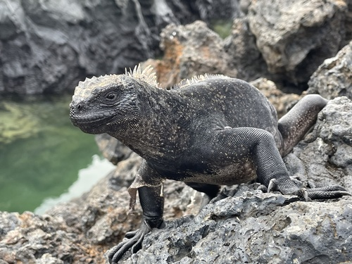
🦎♂ 繁殖期に赤く発色
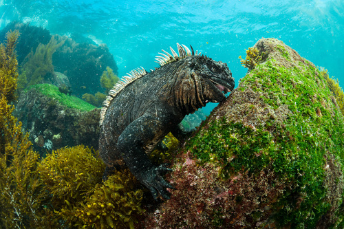
🦎♀ 黒色・小型
海イグアナ
Marine Iguana
Amblyrhynchus cristatus
特徴
- 世界唯一の海に潜るイグアナ。潜水深さ最大12m
- 海藻を食べるため鼻から塩分を噴き出す
- 島ごとに亜種・体色が異なる（エスパニョーラは赤緑）
- 体温が下がると岩上で日光浴し体温を戻す
- ♂は繁殖期（12〜3月）に縄張りをめぐりオスと戦う
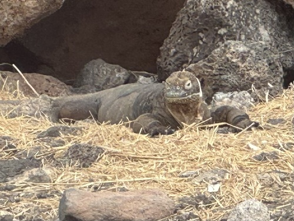
🦎♂ 鮮やかな黄金色
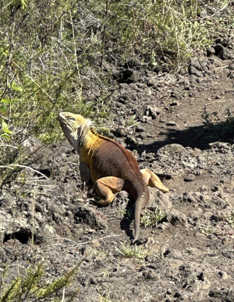
🦎♀ やや褐色がかる
ガラパゴス陸イグアナ
Galápagos Land Iguana
Conolophus subcristatus
特徴
- 体長1m超、体重13kgに達する大型イグアナ
- サボテンの実や葉を主食とする草食性
- 海イグアナとの交雑種「ハイブリッドイグアナ」も確認
- 縄張り意識が強く、オス同士で激しい戦いをする
- ラス・バッカス地区やプラザ島で観察しやすい
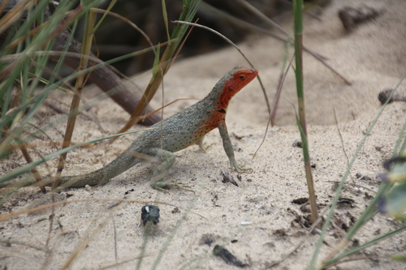
🦎♂ のど元がオレンジ〜赤
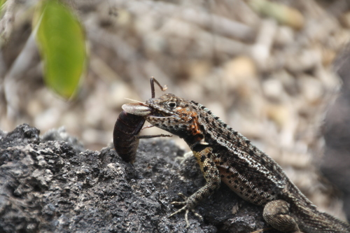
🦎♀ 全身褐色・目立たない
ガラパゴスラバリザード
Galápagos Lava Lizard
Microlophus albemarlensis
特徴
- 溶岩岩礁のあらゆる場所に生息する最も身近なトカゲ
- 島ごとに7種の固有種（亜種）が存在する
- ♂はプッシュアップ動作で縄張りを誇示する
- 昆虫・小型節足動物・植物を食べる雑食性
- 人を恐れずすぐ近くまで寄ってくる
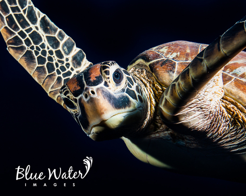
🐢♂ 後ろ足の爪が長く伸びる
♀ 産卵のため砂浜に上陸
アオウミガメ
Green Sea Turtle
Chelonia mydas agassizii
特徴
- ガラパゴスの海岸に産卵に来る代表的なウミガメ
- シュノーケル中に共に泳げる確率が高い
- ♀は夜間に砂浜へ上陸し約100個の卵を産む
- 海藻・クラゲを主食とし体脂肪が青みがかる
- 50〜80年生きるとされる長寿な動物
鳥類
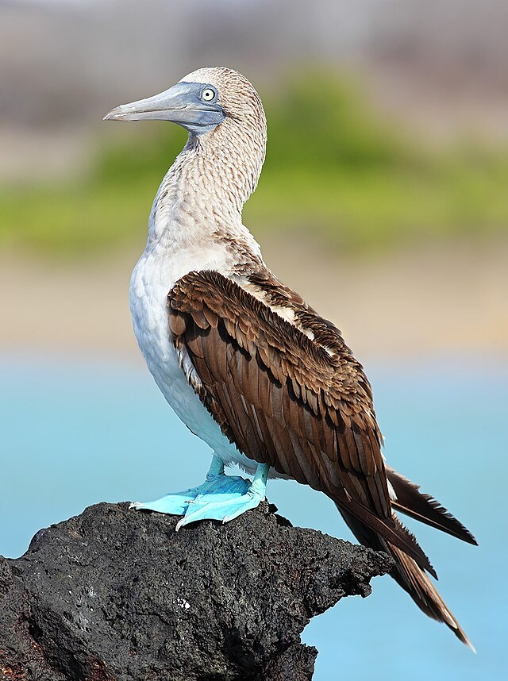
🐦♂ 瞳孔が小さい・足が鮮青
♀ 瞳孔が大きい・体やや大
アオアシカツオドリ
Blue-footed Booby
Sula nebouxii
特徴
- 鮮やかな青い足が特徴。若いほど足の青みが強い
- ♂は求愛ダンスで青い足を高く上げて見せる
- 時速100kmで垂直ダイブして魚を捕る
- ガラパゴス全島で観察可能な最も有名な鳥
- 卵を2〜3個産み、両親が交代で足で温める
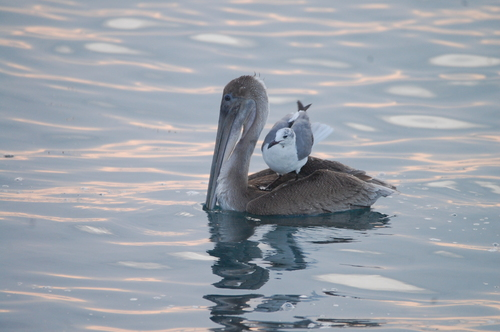
🦅♂♀ ほぼ同じ外見
カッショクペリカン
Brown Pelican
Pelecanus occidentalis urinator
特徴
- 港周辺の岩やボートによく止まっている
- 大きな喉袋で魚を丸ごとすくい取る
- 高所からのダイブ漁が豪快。成功率は高い
- 漁船に集まり水揚げのおこぼれを狙うことも
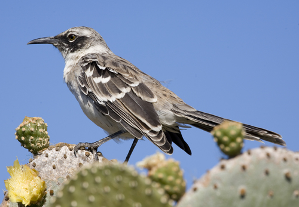
🐦♂♀ 外見はほぼ同じ
ガラパゴスモッキングバード
Galápagos Mockingbird
Mimus parvulus
特徴
- 人を全く恐れず足元に近づいてくる好奇心旺盛な鳥
- ダーウィンが進化論の着想を得た鳥の一つ
- 島ごとに4種の固有種が存在する
- 昆虫・小トカゲ・卵など何でも食べる雑食性
- 他の動物の巣から卵を盗むこともある
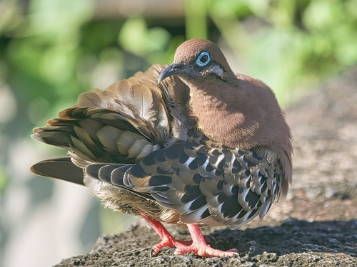
🕊️♂ 青いアイリング
♀ アイリングが小さい
ガラパゴスバト
Galápagos Dove
Zenaida galapagoensis
特徴
- 青いアイリングが美しいガラパゴス固有のハト
- サボテンの花粉を運ぶ重要な花粉媒介者
- 地面をテクテク歩いて種子を食べる
- 非常に人慣れしていて手が届く距離まで来る
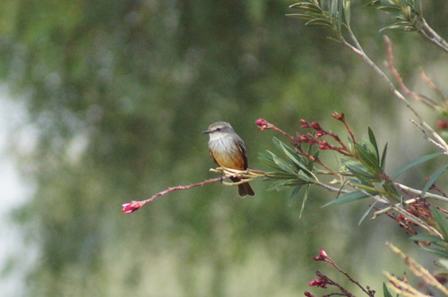
🐦♂ 頭と腹が真っ赤
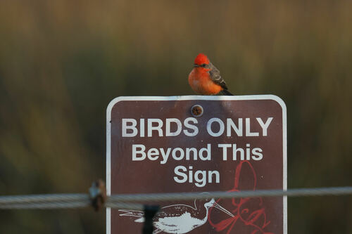
🐦♀ 褐色・腹に橙斑
ヒムネヒタキ（バーミリオンヒタキ）
Vermilion Flycatcher
Pyrocephalus rubinus
特徴
- ♂の真紅の頭と腹が目を引くガラパゴスで最も美しい鳥の一つ
- 内陸の湿潤林・農業地帯で観察できる
- 飛んでいる虫を空中でキャッチするフライキャッチャー
- ♀は地味な褐色で木の枝に紛れやすい
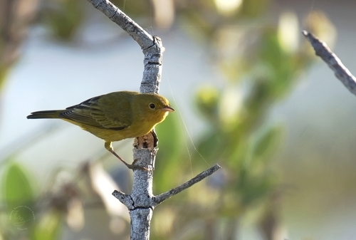
🐦♂ 鮮黄色・頭に赤縞
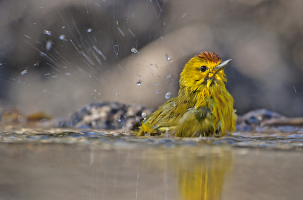
🐦♀ くすんだ黄色・縞なし
キイロアメリカムシクイ
Yellow Warbler
Setophaga petechia aureola
特徴
- 全島に生息する最もよく見かける小鳥の一つ
- ♂は頭に赤い縦縞があり識別しやすい
- マングローブ林や海岸沿いの低木を好む
- 昆虫を主食とし、海イグアナについた虫を食べることも
哺乳類・海洋生物
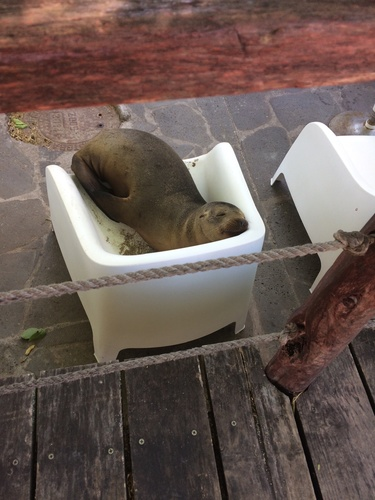
🦭♂ 額が隆起・250kg超
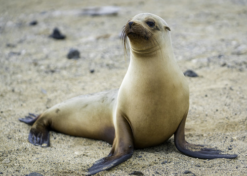
🦭♀ 小型・細身・60〜100kg
ガラパゴスアシカ
Galápagos Sea Lion
Zalophus wollebaeki
特徴
- 港の桟橋・ベンチで堂々と昼寝。人を恐れない
- シュノーケル中に一緒に泳いでくれることも
- ♂（ブルマスター）は縄張りを持ち、メス集団を管理
- 約5万頭がガラパゴスに生息（絶滅危惧種）
- 最大時速35kmで泳ぐ優れた水泳家
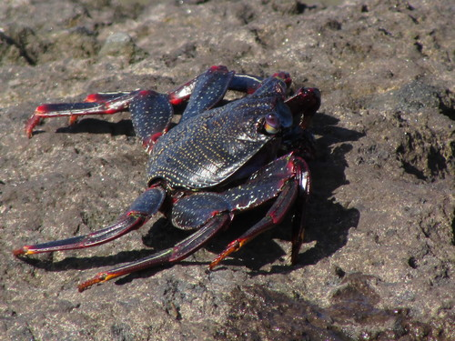
🦀♂ 大型・より鮮やかな赤橙
♀ 小型・暗色
サリーライトフットクラブ
Sally Lightfoot Crab
Grapsus grapsus
特徴
- 鮮やかな赤橙色が黒い溶岩岩礁に映える美しいカニ
- 幼体は黒色。成長とともに赤く変化する
- 波が来ても素早く避ける驚異的な運動能力
- 海イグアナの体についた寄生虫を食べる共生関係
- 動物の死骸も食べる海岸の清掃係
🏝️ エスパニョーラ島 Española / Hood
世界唯一のハゲカツオドリ（ウェーブドアルバトロス）繁殖地。最南端の島
クルーズのみアクセス可
⭐ アルバトロス唯一の繁殖地
赤緑の海イグアナ
鳥類
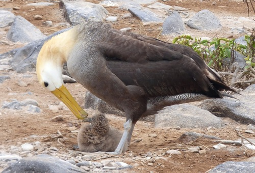
🕊️♂♀ ほぼ同じ外見・求愛ダンスをともに行う
ハゲカツオドリ（ウェーブドアルバトロス）
Waved Albatross
Phoebastria irrorata
特徴
- 世界でエスパニョーラ島にのみ繁殖する絶滅危惧種（約12,000ペア）
- 翼開長2.4m。海上を何週間も休まず飛ぶ
- 4〜12月が繁殖シーズン。プンタ・スアレスで観察
- 求愛ダンスが複雑で有名：嘴合わせ・空鳴き・歩行ダンスをペアで延々と繰り返す
- 生涯同じパートナーと暮らす一夫一妻制
🐦
♂ 足が明るい青・瞳孔小
♀ やや大型・瞳孔が大
アオアシカツオドリ
Blue-footed Booby
Sula nebouxii
特徴
- エスパニョーラではプンタ・スアレスに大規模コロニー
- 足の青色は食べた魚の色素に由来。鮮やかさが健康度の指標
- 群れで水面に一斉ダイブする集団漁が壮観
- 雛も巣を作らず砂地・岩の上で育てる
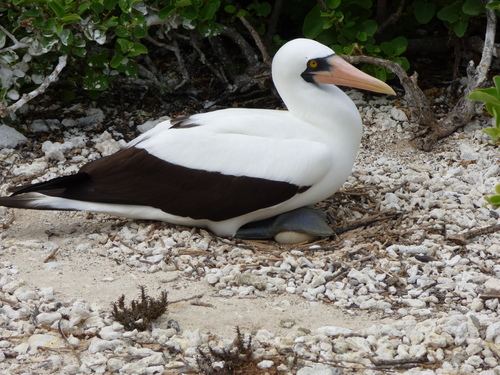
🐦♂ くちばしがオレンジ色
♀ くちばしがピンク
ナスカカツオドリ
Nazca Booby
Sula granti
特徴
- 白い体に黒い飛翔羽・橙黄のくちばしが美しい
- 2卵産むが兄弟競争で生き残るのは1羽だけ
- エスパニョーラ島に最大のコロニーがある
- ♂と♀でくちばしの色が異なるので識別しやすい
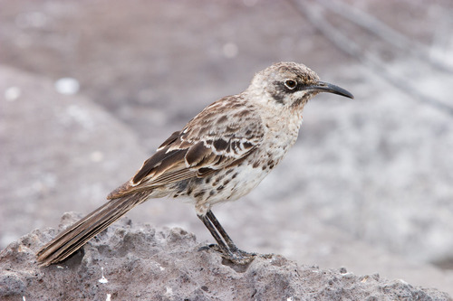
🐦♂♀ 外見はほぼ同じ
エスパニョーラモッキングバード
Española Mockingbird
Mimus macdonaldi
特徴
- エスパニョーラ島とその近隣小岩礁にのみ生息する固有種
- 他のモッキングバードより嘴が長くカーブしている
- 集団で縄張りを防衛する珍しい社会行動をもつ
- 訪問者の靴紐をついばむほど大胆不敵
爬虫類
🦎
⭐ 最美亜種
♂ 赤×緑の鮮やかな体色
♀ 黒〜暗灰色
エスパニョーラ海イグアナ
Española Marine Iguana
Amblyrhynchus cristatus venustissimus
特徴
- 繁殖期（12〜3月）の♂は赤と緑のクリスマスカラーになる
- 「世界で最もカラフルな海イグアナ亜種」と呼ばれる
- 体色の変化は縄張り誇示と求愛シグナル
- ガラパゴスの海イグアナ亜種の中で最も鮮やかとされる
🐢
⭐ 絶滅危惧
♂ 甲羅後部が大きく上がるサドル型
♀ やや小型
エスパニョーラゾウガメ
Española Tortoise
Chelonoidis hoodensis
特徴
- 1970年代に野生個体が15頭まで激減した絶滅寸前の亜種
- ダーウィン研究所での繁殖プログラムで現在2,000頭以上に回復
- サドル型甲羅（首を高く伸ばせる形）が特徴的
- 首を高く伸ばして高い場所の植物を食べる
🏝️ ジェノベサ島 Genovesa / Tower
「鳥の天国」。アカアシカツオドリ世界最大営巣地。北部の孤島でクルーズのみアクセス
クルーズのみ
⭐ アカアシカツオドリ世界最大コロニー
鳥類
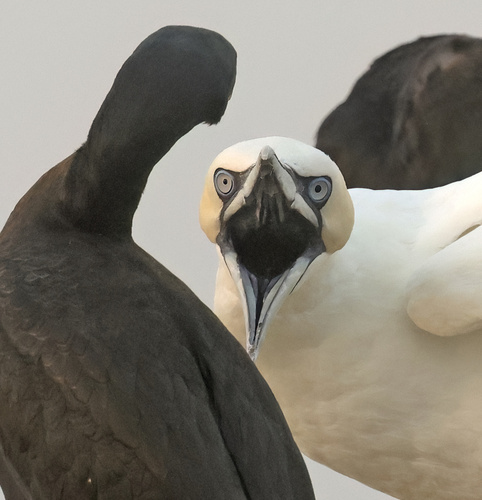
🐦♂ やや小型・赤い足
♀ やや大型・同じ外見
アカアシカツオドリ
Red-footed Booby
Sula sula websteri
特徴
- ジェノベサ島に約14万ペアが繁殖（世界最大のコロニー）
- 3種のカツオドリの中で最小・赤い足が特徴
- 木の上に巣を作る唯一のカツオドリ（アシのような足で枝を掴める）
- 白色型と褐色型の2つのモルフが存在
- 飛行距離が長く、外洋まで200km以上遠征して魚を捕る
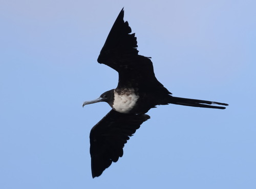
🐦♂ 真紅の喉袋を膨らませる
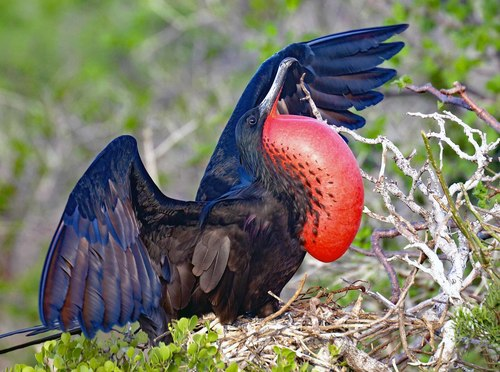
🐦♀ 白い胸・喉袋なし
オオグンカンドリ
Magnificent Frigatebird
Fregata magnificens
特徴
- ♂の巨大な赤い喉袋（最大30cm）が求愛の主役
- 繁殖期に喉袋を膨らませたオスが木に並ぶ光景は圧巻
- 翼開長2.2m・体重が軽くほぼ一日中飛び続けられる
- 他の鳥から魚を強奪するクレプトパラサイト（海賊戦法）
- 水に濡れると飛べなくなるため海には絶対に着水しない
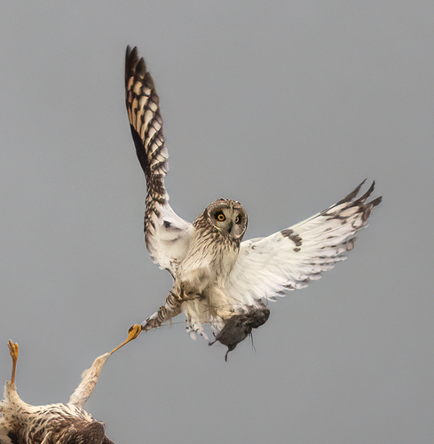
🦅♂ わずかに淡色
♀ やや大型・褐色が濃い
ガラパゴスコミミズク
Short-eared Owl (Galápagos)
Asio flammeus galapagoensis
特徴
- 昼間でも活動する珍しいフクロウ（主に夕方〜朝）
- ジェノベサ島では昼間岩の上や草地で発見できる
- ウミツバメの雛や小型鳥を捕食する
- 低く地表近くを滑空しながら獲物を探す独特のスタイル
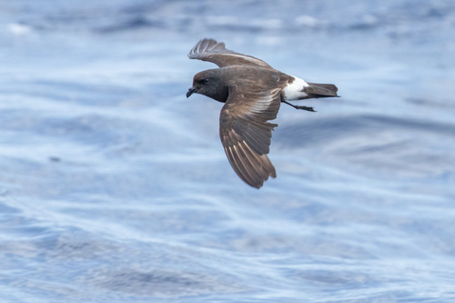
🐦♂♀ 外見はほぼ同じ
マデラウミツバメ
Band-rumped Storm-petrel
Hydrobates castro
特徴
- 翼開長わずか43cm・海上を低く舞う小型の海鳥
- 夜間に帰巣。集団で島を飛び回る光景が幻想的
- 岩の割れ目や穴に巣を作り、卵を1個だけ産む
- 外洋では海面スレスレを「ウォーキング」しながら飛ぶ
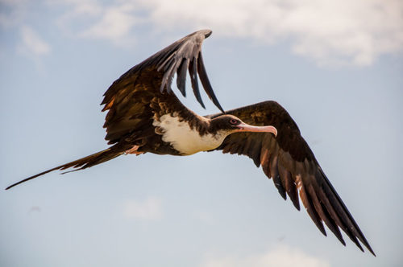
🐦♂ 赤い喉袋
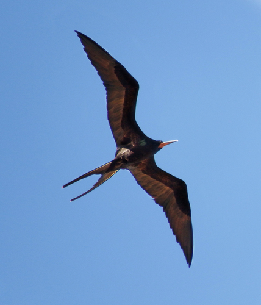
🐦♀ 白い胸・赤い眼周囲
コグンカンドリ
Great Frigatebird
Fregata minor ridgwayi
特徴
- オオグンカンドリに似るが♀の眼周囲の赤リングで識別
- ジェノベサ島のプリンス・フィリップス・ステップスに多い
- 同じくクレプトパラサイト行動をとる
- 翼開長2.3m・体重わずか1.5kgの超軽量飛行家
🏝️ イサベラ島 Isabela
ガラパゴス最大の島。6つの火山・6亜種のゾウガメ・世界唯一の赤道直下ペンギン
最大の島
⭐ 6亜種のゾウガメ
ペンギン
飛べないウミウ
鳥類
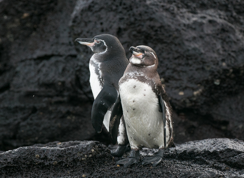
🐧♂♀ 外見はほぼ同じ（♂わずかに大型）
ガラパゴスペンギン
Galápagos Penguin
Spheniscus mendiculus
特徴
- 赤道直下に生息する世界唯一のペンギン（世界最小クラス・49cm）
- フンボルト海流の冷たい海水がガラパゴスまで届くため生存可能
- 翼を広げて体を冷やし暑さに対応する
- タヘウス岬・バルトロメ島周辺が最も観察しやすい
- シュノーケル中に水中で一緒に泳げることがある
- 現在約1,200羽のみ。絶滅危惧IA類（CR）
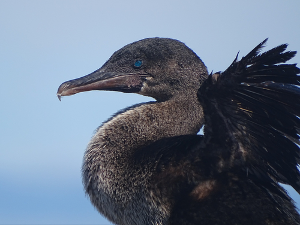
🐦♂ 約30%大型・翼が小さい
♀ 小型・同様に翼が退化
ガラパゴスウミウ（飛べないウミウ）
Flightless Cormorant
Nannopterum harrisi
特徴
- 世界唯一の「飛べないウ」。翼が体の1/3程度に退化
- フェルナンディナ島とイサベラ島にのみ生息（約1,500羽）
- 泳ぎが得意で潜水してタコ・ウナギを捕る
- 産卵後、♀は巣を離れ別のオスと再交尾・子育ては♂が担う
- 天敵がいないため翼が退化した進化の典型例
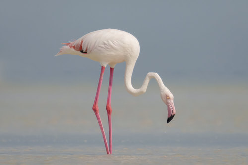
🦩♂ わずかに大型・より深いピンク
♀ 同様の外見
アメリカフラミンゴ（ガラパゴス亜種）
American Flamingo
Phoenicopterus ruber
特徴
- イサベラ島のプンタ・モレノのラグーンに生息
- 群島全体で約500羽のみの希少種
- ピンク色は食べているフラミンゴエビ（アルテミア）の色素由来
- 逆さまにした嘴でラグーンをフィルタリングして餌を取る
- 片足立ちは体温保持と筋肉疲労の軽減が目的
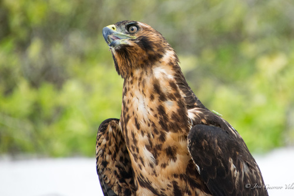
🦅♂ 小型・ポリアンドリー（複数の♀と交尾）
♀ ♂より大型・縄張りを持つ
ガラパゴスタカ
Galápagos Hawk
Buteo galapagoensis
特徴
- ガラパゴス群島唯一の猛禽類（固有種）
- 天敵がいないため人を全く恐れない
- 珍しいポリアンドリー（♀1羽に♂複数）の繁殖システム
- イグアナ・ウミガメの幼体・アシカの胎盤まで食べる
- 現在約800羽のみ。絶滅危惧種
爬虫類・哺乳類
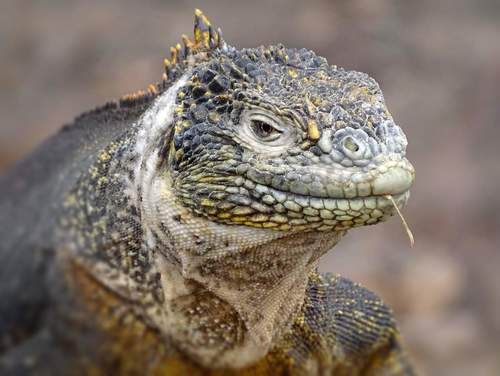
🦎♂ 大型・頭が大きい
♀ 小型・おとなしい
ガラパゴス陸イグアナ（イサベラ亜種）
Land Iguana (Isabela)
Conolophus subcristatus
特徴
- イサベラ島の乾燥地帯に生息する最大の陸イグアナ集団
- ウルフ火山周辺には特に大型個体が多い
- ツノサボテンの実・葉・果実を主食とする
- タランチュラも捕食することがある
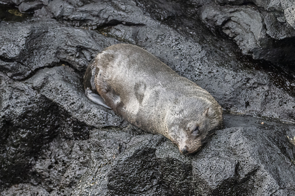
🦭♂ たてがみ・70kg
 🦭
🦭
♀ 細身・30kg
ガラパゴスオットセイ
Galápagos Fur Seal
Arctocephalus galapagoensis
特徴
- アシカより小型で毛が密・ふさふさしているのが特徴
- 岩場の涼しい影を好む（熱に弱い）
- 深さ200m以上まで潜水して夜間に魚を捕る
- ♂は縄張りを持ち繁殖期に激しく争う
- フェルナンディナ島が最大の生息地
🏝️ フェルナンディナ島 Fernandina
最も若く火山活動が活発な島。侵略種ゼロの原始の楽園。クルーズのみアクセス
クルーズのみ
⭐ 侵略種ゼロ
飛べないウミウ最大生息地
鳥類・爬虫類・哺乳類
🐦
⭐ 最大生息地
♂ 大型・つがい後も子育て継続
♀ 小型・産卵後すぐ次の♂へ
ガラパゴスウミウ（飛べないウミウ）
Flightless Cormorant
Nannopterum harrisi
特徴
- フェルナンディナ島のプンタ・エスピノサが最大の観察ポイント
- 翼が退化して飛べないが、水中では素早く泳ぐ
- 独特の繁殖システム：♀が子育てを♂に任せて別オスと再ペアリング
- 巣は海藻を積み上げて作る。いつも新鮮な海藻を持ち帰る
🦎
⭐ 世界最大群落
♂ 最大2kg・縄張り争い激しい
♀ 小型・黒色
フェルナンディナ海イグアナ
Fernandina Marine Iguana
Amblyrhynchus cristatus cristatus
特徴
- プンタ・エスピノサで数千頭が溶岩岩礁を埋め尽くす壮観な光景
- 全島の海イグアナの中で最大亜種
- 寒い時期は体を重ね合わせて集団で体温を維持する
- 潜水時間は最大60分、深さ最大20m
🐧
♂♀ 外見はほぼ同じ
ガラパゴスペンギン
Galápagos Penguin
Spheniscus mendiculus
特徴
- イサベラ島との境界付近の岩礁に多く生息
- 溶岩の岩礁上でのんびり日向ぼっこする姿が愛らしい
- 水中では時速35kmで泳ぐ優れた漁師
🦅
♂ 複数が1♀と協力育雛
♀ 大型・縄張り所有
ガラパゴスタカ
Galápagos Hawk
Buteo galapagoensis
特徴
- フェルナンディナは人為的影響が最も少なく観察しやすい
- 観光客のすぐそばに降り立つほど人を恐れない
- ヘビ・イグアナ・ウミガメの雛を捕食する頂点捕食者
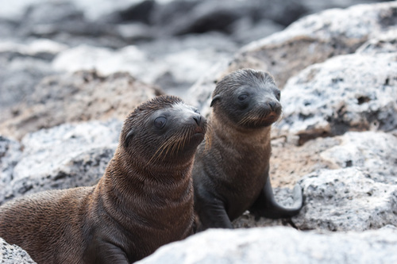
🦭♂ たてがみあり・大型
♀ 小型・細身
ガラパゴスオットセイ
Galápagos Fur Seal
Arctocephalus galapagoensis
特徴
- フェルナンディナが全個体数の約40%を擁する最大の生息地
- 岩礁の洞窟や影に潜むことが多く目立ちにくい
- 夜間潜水漁が主で日中は休息していることが多い
🏝️ サン・クリストバル島 San Cristóbal
ダーウィンが最初に上陸した島。東部の玄関口・県庁所在地プエルト・バケリソ・モレノ
フライト直行便あり
3種のカツオドリが1島で
アシカが町を歩く
鳥類
🐦
⭐ 3種同時観察
3種すべてプンタ・ピットで観察可
3種のカツオドリ（同時観察地点）
All 3 Booby Species
Sula nebouxii / S. granti / S. sula
特徴
- プンタ・ピットはアオアシ・ナスカ・アカアシの3種が同時に観察できるガラパゴス唯一のポイント
- アカアシは木の上、ナスカとアオアシは地面に巣を作る
- 3種の足の色比較が一度にできるレアな場所
- プンタ・ピットへは島東端への3km程度のトレッキングが必要
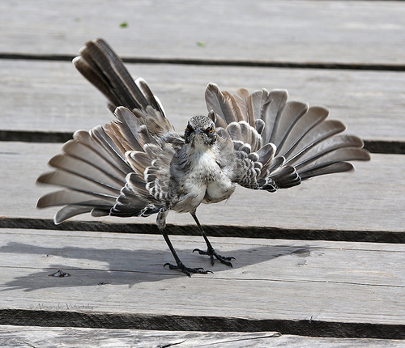
🐦♂♀ 外見はほぼ同じ
チャサムモッキングバード
Chatham Mockingbird
Mimus melanotis
特徴
- サン・クリストバル島とそのごく近い小島のみに生息する固有種
- ダーウィンが1835年に初めて採集した種の一つ
- ガラパゴスモッキングバードより黒い耳斑が大きい
- 非常に好奇心旺盛で観光客のバックパックをつついてくる
爬虫類・哺乳類
🦭
♂ 250kgまで成長・額の隆起
♀ 60〜100kg・細身
ガラパゴスアシカ（町中に出没）
Galápagos Sea Lion
Zalophus wollebaeki
特徴
- プエルト・バケリソ・モレノの街中にも出現する
- 公園のベンチ・桟橋で人と共存して昼寝
- 夕方に群れが砂浜に集まり賑やかに鳴き合う
- 「海のラブラドール」と称されるほど人懐っこい
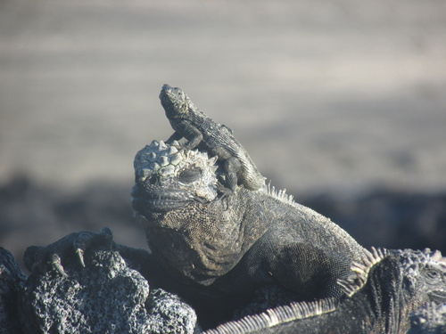
🦎♂ のど元が赤〜オレンジ
♀ 褐色・目立たない
サン・クリストバルラバリザード
San Cristóbal Lava Lizard
Microlophus bivittatus
特徴
- サン・クリストバル島固有の亜種
- 岩やフェンスの上でプッシュアップして縄張りを主張
- 尾を自切して天敵から逃れる。数週間で再生する
- どこにでもいて最もよく目にする爬虫類
🏝️ ノース・セイモア島 North Seymour
バルトラ空港から最も近い日帰りツアーの定番。グンカンドリの大コロニーが有名
日帰りツアー人気No.1
グンカンドリ大コロニー
アオアシカツオドリ求愛ダンス
鳥類・爬虫類
🐦
♂ 全黒・巨大な赤い喉袋
🐦
♀ 黒+白い胸・赤い眼周囲リング
オオグンカンドリ（大コロニー）
Magnificent Frigatebird
Fregata magnificens
特徴
- ノース・セイモアはガラパゴス最大のグンカンドリコロニーの一つ
- 繁殖期（6〜9月）は何百羽もの♂が喉袋を膨らませ♀を呼ぶ
- 喉袋の膨らましには最大20分かかる
- トレイルを歩くと頭上すぐのところに巣がある
- ♀は翼のある♂を選ぶため最も翼の大きいオスが選ばれやすい
🐦
♂ ダンス中に青い足を高く上げる
♀ 足の青さが健康の証
アオアシカツオドリ（求愛ダンス）
Blue-footed Booby
Sula nebouxii
特徴
- ノース・セイモアのトレイルではすぐそばで求愛ダンスが見られる
- ♂は青い足を交互にゆっくり上げながら歩くダンスで♀を誘う
- 空中でも材料（木の枝など）を♀に贈るプレゼント行動がある
- ヒナの頃から親に連れられて海へ泳ぎの練習をする
🦎
♂ 黄金色・大型
♀ より褐色・小型
陸イグアナ
Land Iguana
Conolophus subcristatus
特徴
- ノース・セイモアの陸イグアナはバルトラ島から移植された群れ
- 島全体がサボテンが少ないため競争が激しい
- トレイル上で日光浴しているため踏まないように注意
🏝️ フロレアナ島 Floreana / Charles
謎の失踪事件の歴史ある島。ガラパゴス随一のシュノーケルスポット・デビルズ・クラウン
少人数居住者あり
デビルズ・クラウン（最高シュノーケル）
ウミガメ産卵ビーチ
鳥類・海洋生物
🦩
♂ わずかに大型
♀ 巣作りを主導
アメリカフラミンゴ
American Flamingo
Phoenicopterus ruber
特徴
- フロレアナのラグーンはガラパゴスで最も観察しやすいフラミンゴの生息地
- コロニー・ラグーンへは短いトレイルで行ける
- 繁殖期（1〜3月）には求愛ダンスと泥の巣作りが見られる
- 幼鳥は白〜灰色。3年かけてピンクに変化する
🐢
♂ 交尾のため海で待機
♀ 夜間砂浜に上陸して産卵
アオウミガメ（産卵期）
Green Sea Turtle (nesting)
Chelonia mydas agassizii
特徴
- コロニー・ビーチは主要なウミガメ産卵ビーチの一つ
- 12〜5月の夜間に♀が上陸し深さ50cmの穴に80〜120個産卵
- ♀は2〜4週間おきに複数回産卵し、シーズン中に5〜7回上陸
- 孵化まで約60日。夜間のみ自力で海へ向かう
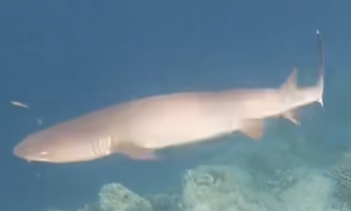
🦈♂♀ 外見はほぼ同じ（♀がわずかに大型）
ホワイトチップリーフシャーク
Whitetip Reef Shark
Triaenodon obesus
特徴
- デビルズ・クラウンの岩陰で複数頭が重なって休んでいる
- 人を襲うことはほぼなく、シュノーケラーが近づいても動じない
- 夜行性で昼は休息・夜にサンゴ礁の隙間で魚を狩る
- 体長1.6m程度。背びれと尾びれの先端が白いのが特徴
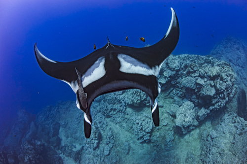
🐟♂ 交尾のために♀を追跡
♀ 大型・翼開長最大5m
マンタレイ（オニイトマキエイ）
Giant Manta Ray
Mobula birostris
特徴
- デビルズ・クラウン付近で遭遇率が高い
- 翼開長最大7m・体重3トンに達する世界最大のエイ
- プランクトン・小魚を口を開けながら泳いで濾し取る
- 水面からジャンプして着水する「ブリーチング」行動がある
🏝️ サンタ・フェ島 Santa Fé / Barrington
固有の陸イグアナと巨大サボテンの森が特徴的。透明な湾でのシュノーケルが人気
サンタクルスから1時間半
⭐ 固有の陸イグアナ
巨大サボテンの森
爬虫類・鳥類・海洋生物
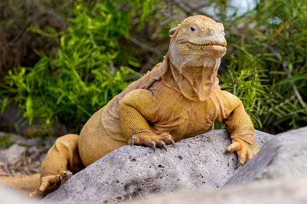
🦎♂ 黄白色・頭部が大きい
♀ 小型・より灰色がかる
サンタ・フェ陸イグアナ
Santa Fé Land Iguana
Conolophus pallidus
特徴
- サンタ・フェ島にのみ生息する固有種（他の陸イグアナとは別種）
- 体色がより淡い白黄色〜クリーム色で大型（体長1.2m超）
- 背中の棘が長く鋭い
- 巨大なオプンティアサボテンの実・葉が主食
- 上陸地点すぐそばで日光浴しているため、船から降りてすぐ出会える
🦈
♂♀ 外見はほぼ同じ
ホワイトチップリーフシャーク
Whitetip Reef Shark
Triaenodon obesus
特徴
- サンタ・フェ湾の澄んだ水中で複数頭が砂底で休んでいる
- 穏やかな性格でシュノーケラーを無視することがほとんど
- 鱗に細かいトゲがあり触ると切れる（触れないこと）
🦅
♂ 複数で協力育雛
♀ 大型・縄張り主
ガラパゴスタカ
Galápagos Hawk
Buteo galapagoensis
特徴
- サンタ・フェでも観察できる群島唯一の猛禽類
- サボテンの天辺に止まり縄張りを監視する姿がよく見られる
- ラバリザードやイグアナ幼体を主な獲物にする
🏝️ バルトロメ島 Bartolomé
ガラパゴスの絶景スポット。ピナクル・ロックとペンギン・シュノーケルが同時に楽しめる
絶景No.1
ペンギン×シュノーケル
火山地形ウォーク
鳥類・海洋生物・哺乳類
🐧
♂♀ 外見はほぼ同じ（♂わずかに大型）
ガラパゴスペンギン（ピナクル・ロック）
Galápagos Penguin
Spheniscus mendiculus
特徴
- ピナクル・ロック周辺の岩礁が主な生息地
- シュノーケル中に水中を一緒に高速で泳ぐ体験ができる
- 岩の上でよちよち歩く姿と水中の素早さのギャップが魅力
- 翼は完全に水中用に特化しており、空は飛べない
🦭
♂ 250kgまで成長・縄張り防衛
♀ 60〜100kg・子育て担当
ガラパゴスアシカ（シュノーケル同伴）
Galápagos Sea Lion
Zalophus wollebaeki
特徴
- バルトロメ島のビーチでシュノーケルすると一緒に泳いでくれる確率が高い
- 水中でスパイラルや急旋回など遊び行動を見せる
- 砂浜では人のすぐ近くで昼寝。近づきすぎると威嚇される
- 母子の間では独自の鳴き声を使って見分ける
🦀
♂ 大型・より赤みが強い
♀ 小型・幼体は黒色
サリーライトフットクラブ
Sally Lightfoot Crab
Grapsus grapsus
特徴
- 黒い溶岩岩礁に赤橙色が映える。バルトロメは溶岩が多く特に鮮やか
- 幼体は黒で溶岩に擬態・成体は鮮やかな色に変化する
- 波の打ち付ける岩で素早く移動できる6脚歩行が得意
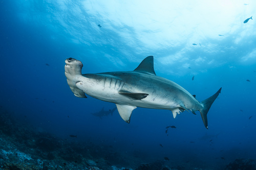
🦈♂ 小型・群れの外縁を泳ぐ
♀ 大型・群れの中心を泳ぐ
シュモクザメ（スキャロップドハンマーヘッド）
Scalloped Hammerhead Shark
Sphyrna lewini
特徴
- バルトロメ付近を数十〜数百頭の大群で回遊することがある
- ハンマー状の頭部（セファロフォイル）で電気感覚を持つ
- ♀が大型で群れの中心を形成。♂は外周を泳ぐ
- 人間への攻撃はほぼないが、大型個体には距離を保つこと